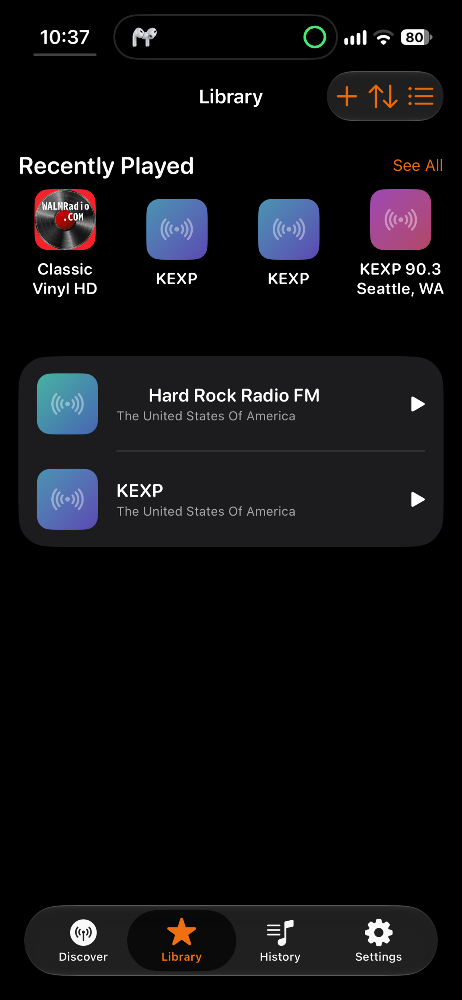
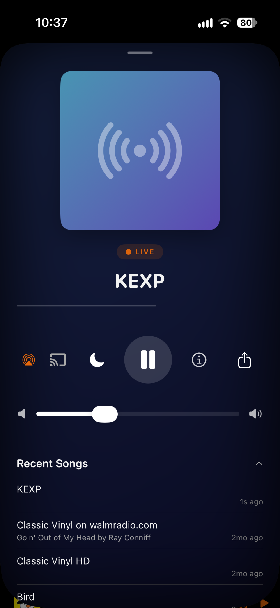

Find stations
Browse popular stations or search by name, country, language, and genre.
Internet radio / iPhone
Find live stations from around the world, save the ones you like, and keep listening with the controls already on your iPhone.



What it does
Browse popular stations or search by name, country, language, and genre.
Save stations you want to come back to and use listening history to find something you heard earlier.
Background playback, Lock Screen controls, widgets, AirPlay, Google Cast, and a sleep timer.
No MotoWave account, ads, analytics SDK, tracking, or MotoWave backend. Favorites and history stay on your device.
On your phone
MotoWave stays focused on the station you want to hear instead of turning radio into another feed.


Origin
MotoWave started as an iPhone port of GNOME Shortwave, the internet-radio app for the GNOME desktop. MotoWave keeps a Rust core derived from that project and adapts the experience for SwiftUI and iPhone.
Station discovery is powered by the public Radio Browser directory.
Need help or found something broken?